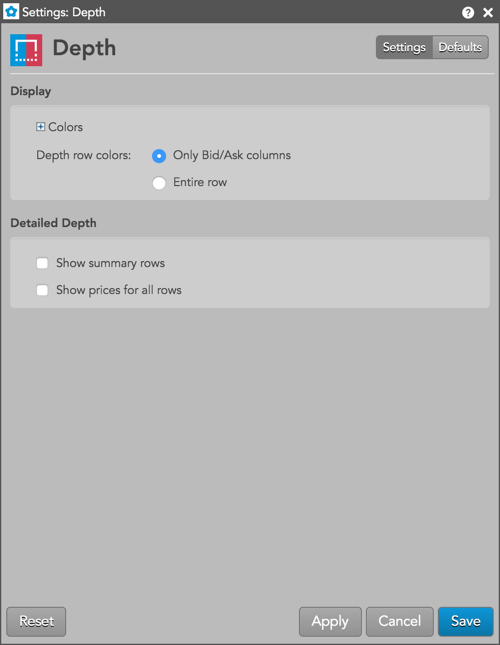

This setting affects only the selected Depth widget. To update the default settings with these value for newly-opened Depth widgets or to apply them to existing opened Depth widgets, click Defaults.

{% include settings/detailed-depth-settings.html %}